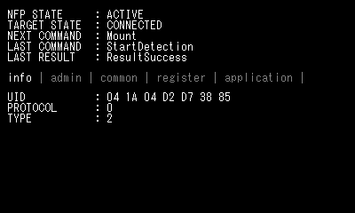
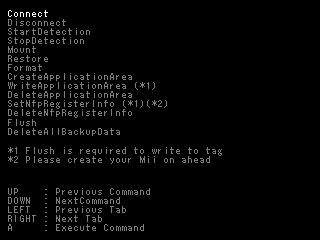

NfpManager is a tool for managing NFP tags.
Prepare the NFP tags in advance, using the NoftWriter tool to write to the tags the amiibo data you plan to use in your application.
An unusually large amount of information can be read off an NFP tag. Use the left/right buttons on the +Control Pad to switch between the tabs of NfpManager and view the various information. This section describes the status indicators and the different information that is shown in each tab.

nn::nfp::GetNfpState function.nn::nfp::GetTargetConnectionStatus function. For the New Nintendo 3DS, the state is always CONNECTED.StartDetection was the last command executed and that it was successful.
This information can be read not just from an NFP tag, but from any regular NFC tag.
The information shown in this tab is valid from the time when the StartDetection command has been initiated and the tag has been detected.
For an NFP tag, the UID is 7 bytes, the PROTOCOL is 0 (NFC-A), and the TYPE is 2 (Type 2).
Applications normally cannot get the information that is shown in this tab. It is displayed for debugging purposes and to check that the guidelines are being followed.
Other information besides the items listed below may show up on this tab, but application developers do not need to concern themselves with that data. No information can be shown if the tag is not mounted.
This tab shows the information in the shared region, as obtained by the nn::nfp::GetNfpCommonInfo function. No information can be shown if the tag is not mounted.
This tab shows the initially registered information, as obtained by the nn::nfp::GetNfpRegisterInfo function. No information can be shown if none has been registered or if the tag is not mounted.
nn::nfp::FontRegion.nn::cfg::CfgCountryCode.
This tab shows the data that has been written to the application-specific region.
No information can be shown if the application-specific region has not been created, or if the tag is not mounted, or if the access ID is not 0FF41E00.
Select a command using the up/down buttons on the +Control Pad, and then execute that command using the A Button.
For commands that require the presence of a tag, first set the NFP tag in the center of the system's lower screen and then execute the command.

In general, all of the commands correspond to the NFP library API functions. For more information, see the API reference documentation.
Connects the 3DS to a peripheral NFC reader/writer.
Turn on the NFC reader/writer, align the infrared port of the 3DS with the infrared port of the NFC reader/writer, and then execute this command.
Select TARGET STATE in the upper screen to confirm the connection status.
This command is not necessary with the New Nintendo 3DS because the system has its own built-in NFC reader/writer.
Regardless of whether you execute this command, TARGET STATE is always CONNECTED for the 3DS.
Disconnects the 3DS from the NFC reader/writer.
This command is not necessary with the New Nintendo 3DS because the system has its own built-in NFC reader/writer.
If you execute this command while a tag is in the process of being detected, it has the same effect as executing StopDetection.
Initiates the process of tag detection. If you are using a 3DS, first connect the system to a peripheral NFC reader/writer and then execute the command.
If this command succeeds, NFP STATE changes to SEARCH status. If you then introduce a tag, the status changes again to ACTIVE.
After a tag has been detected, you cannot detect additional tags unless you either remove the tag and execute StartDetection again after the state has transitioned to DEACTIVE, or execute StopDetection to explicitly stop detection and then execute StartDetection again.
Halts the process of NFP tag detection. The state transitions to INIT.
Mounts an NFP tag and puts it in a state for reading and writing.
This command can be executed only if a tag has been detected and the state is ACTIVE. If mounting succeeds, the state transitions to MOUNT.
If the tag is not an NFP tag or if it is corrupt, this command will fail. Look at what is shown on the screen for LAST RESULT and perform the appropriate operation.
Unmounts the NFP tag and releases the mount status.
Returns to the ACTIVE state.
If the Mount command is executed and the LAST RESULT status is ResultNeedRestore, the tag is corrupted but can be restored using the available backup data.
Use the Restore command to restore the tag back to the state when it was last accessed by the system for reading and writing.
If the tag is not corrupted, the Restore command cannot execute, even if the state is ACTIVE. If the tag is successfully restored, it is automatically mounted and put in the state for reading and writing.
If the Mount command is executed and the LAST RESULT status is ResultNeedFormat, the tag is corrupted and there is no available backup data for restoring the tag.
Use the Format command to initialize all of the data written to the tag and put the tag in a usable state.
If backup data for the tag remains in some other system and you have access to that system, you can use the Restore command.
Unlike the Restore command, the Format command can execute even if the tag is not corrupted, providing that the state is ACTIVE. Also, the successfully formatted tag is not mounted automatically.
Creates a new application-specific area. Execute this command in the MOUNT state.
The application-specific area created by NfpManager has the access ID 0FF41E00.
NfpManager specifies just 4 bytes of data (0x00000000), and the remaining 212 bytes are filled with random numbers by the NFP library.
If LAST RESULT is ResultAlreadyCreated, execute the DeleteApplicationArea command to delete the application-specific area.
Even if ERROR is displayed in the application tab of the upper screen, a separate application-specific area with a different ACCESS ID might be created.
If LAST RESULT is ResultOperationFailed, writing failed and the tag data is probably corrupted.
Updates the application-specific area. Execute this command in the MOUNT state after an application-specific area has been created.
NfpManager treats the first four bytes as the counter and increments the value every time you execute this command.
However, this command only updates the cache in memory. To actually write data to the tag, you must execute the Flush command.
The command fails if the access ID of the application-specific area written to the tag is not 0FF41E00.
Deletes the application-specific area. Execute this command in the MOUNT state.
This command deletes any application-specific area that exists in the tag, regardless of the access ID.
If LAST RESULT is ResultNeedCreate, there is no application-specific area.
If LAST RESULT is ResultOperationFailed, writing failed and the tag data is probably corrupted.
Registers initial information for the tag. Execute this command in the MOUNT state.
The nickname and owner's Mii is obtained from the system, so create your own Mii before registering the initial information.
This command only updates the cache in memory. To actually write data to the tag, you must execute the Flush command.
Deletes initial information. Execute this command in the MOUNT state.
If LAST RESULT is ResultNeedCreate, there is no initial information.
If LAST RESULT is ResultOperationFailed, writing failed and the tag data is probably corrupted.
Writes the changes made with WriteApplicationArea and SetNfpRegisterInfo in the MOUNT state to the tag.
If LAST RESULT is ResultOperationFailed, writing failed and the tag data is probably corrupted.
Deletes all of the backup data for the NFP tag stored in the system. This command can be executed in any state, and it takes about five seconds.
Backup data is created when the Mount command or any of the Create, Delete or Flush APIs are executed.
The need to format a tag (Mount returns ResultNeedFormat) arises only when there is no backup data, so this command is useful when deleting the backup data when you want to intentionally create this need.
CONFIDENTIAL